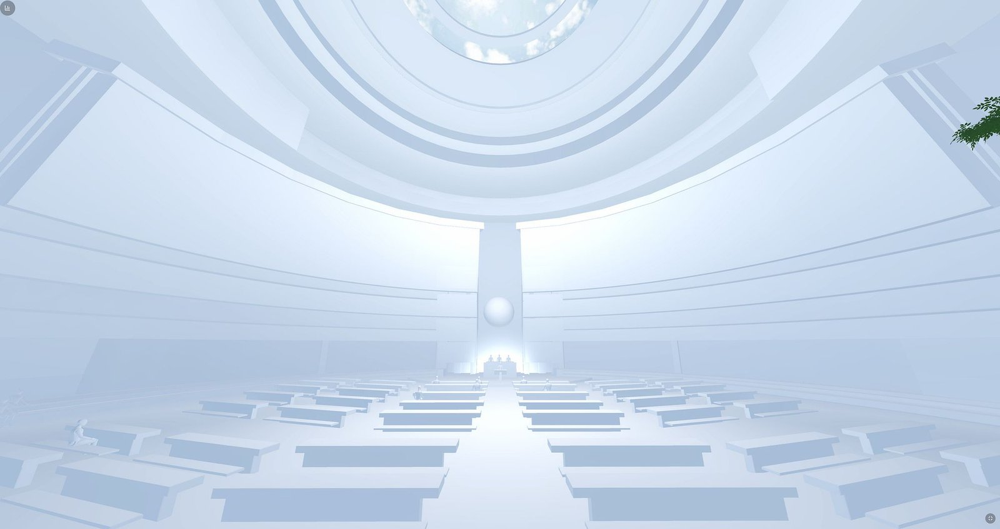
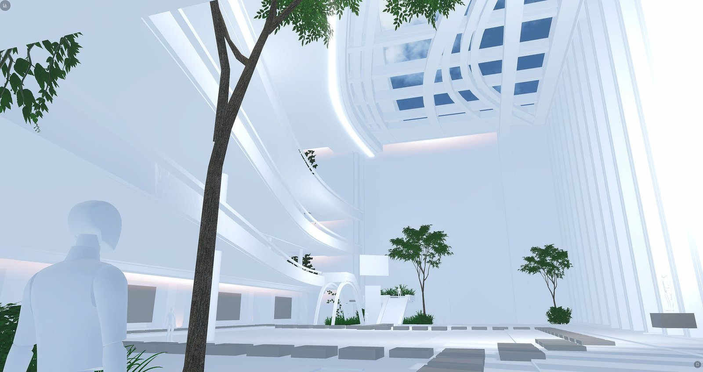
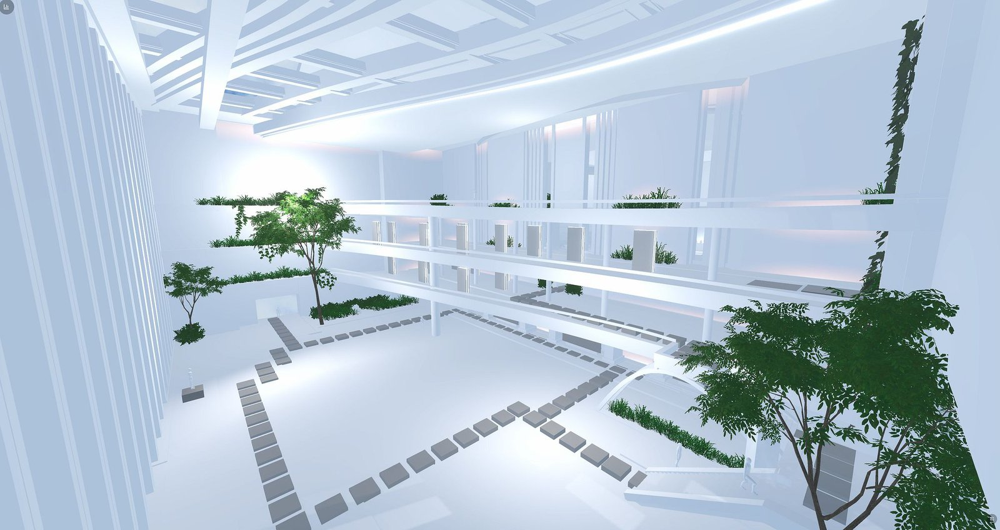
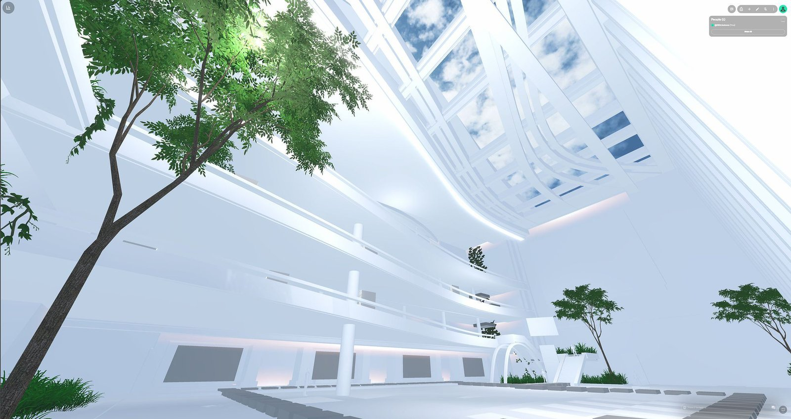
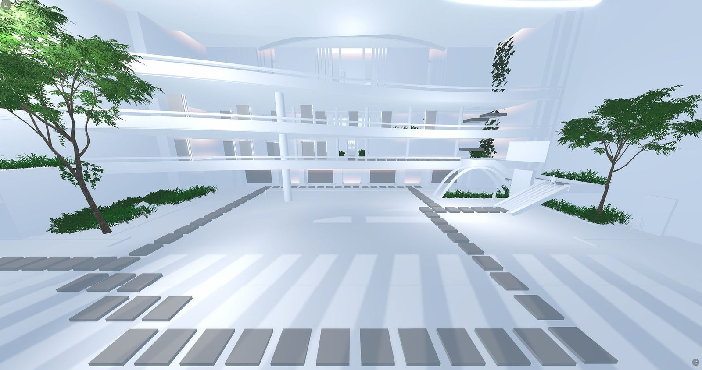

The Hall That Holds the World
The UN General Assembly Hall is the most recognizable meeting room on Earth. For COP30 in Belém, we rebuilt it — four floors, eighteen meeting rooms, placeholder seats and all — for a climate conference most of the world could only attend through a screen.

Start with the arithmetic that made the room necessary. A climate conference fits a city; the climate fits nobody's conference hall. COP30 was the first ever held in the Amazon — Belém, at the edge of the forest the whole exercise exists to protect — and the Presidency knew before the invitations went out that most of the world could not come. Seven million people, give or take, with an interest, a connection, and no boarding pass. The question traveled down the line until it reached us, and it arrived shaped like a building: could the most recognizable meeting room on Earth be rebuilt, floor by floor, for people who will never stand in the original?
The commission came through UNDP Brazil, in partnership with the COP30 Presidency — part of a platform the UN press office would later describe as opening a new era of global climate participation. Our piece of it was specific: the Virtual Assembly Hall. Not a stage. Not a broadcast. The room itself — the one with the marble and the golden curtain in New York — reimagined as a place a farmer in Pará could walk into from a phone.
A building in four floors
Phase 1 was the bones, and the bones were honest. The lobby came first — the entry point, sightlines to everything, pathways that made sense before you read a sign. From there the plan climbed: three full floors plus an open fourth, connected by stairs and elevators, because a virtual room that excludes someone who can't manage a staircase has failed before anyone says a word about climate.

The first floor kept the flow of the traditional New York hall: reception, vertical transport, space allocated for information displays. The second and third floors carried the part that made the building work — rhythmically spaced portals to eighteen external meeting rooms, each one a door out of the hall and into a negotiation. The fourth floor stayed deliberately open: overflow seating, social zones, a room that could become breakout sessions or an exhibition depending on what the fortnight demanded. Grandeur and optimization, balanced. That phrase is from our own progress report, and we stand by it.

The Assembly Hall itself was the heart of it. Main layout established, flexible configuration, seating positioned — using placeholder models, and we say that plainly because the placeholder seats are the truest thing in the whole report. Every desk placed for sightlines before a single texture went on. The room had to work as a room before it was allowed to be a symbol.
The questions a progress report asks out loud
What I love about the Phase 1 document, looking back at it now, is that it never pretended the building was finished. It was a report written in the middle of construction, and it asked its client real questions in real time. Should the scene read as day or as night? Do we need a specific — or UN approved — font for the signage? Which kinds of AI support should live in the space, and where exactly does an AI assistant belong in a diplomatic building? Can we have a folder of multimedia mockups before launch, please?

Those questions are the craft. Anyone can texture a marble wall. The work was deciding how a delegate's eye moves through a room built to receive millions without anyone feeling lost — path differentiation, navigational landmarks, ambient sound that suspends disbelief at a level below conscious thought. A building that reduces cognitive load is a building that lets people think about carbon instead of corridors.
Some of it stayed optional, flagged honestly in the report: non-player characters who could answer questions as UNDP staff, discovery-based interactions, gamified learning points. Prioritized by budget and timeline, and left to the client's judgment. The report ends by welcoming feedback on design decisions — which is the tone of a builder, not a vendor. We were constructing a diplomatic instrument and we treated the client as the co-author of it.
What the room became
By November the hall was live as the center of Maloca — the COP30 Presidency's virtual platform, built on Spatial — and the numbers the UN ended up publishing were the ones we had designed the pipes for: up to 7,200 events across 20 virtual environments over the fifteen days of the conference, an AI assistant named Macaozinho trained only on official UN documents, AI translation in seven languages so a delegate could argue in the language they dreamed in. Four thousand people came through before the doors officially opened. The General Assembly Hall — a room you normally need a delegation badge to stand inside — took everyone.

The CNN segment called it a way to bring the public into the plenary. The UN's own press release called it a new era of global climate participation. We have a smaller name for it, the one we use in the studio: it's the room responding. The same instinct that put a store inside a game put a parliament inside a website. Spaces that meet people where they are — that's the whole practice, and COP30 was the largest room it has ever been asked to hold.
What we'd do again on purpose
Build the civic loop early, the way we built the commerce loop for Walmart: the moment a public visitor can walk the same floor as a delegate, every design argument gets honest. Keep the hall legible before it's beautiful — placeholder seats and clear sightlines beat marble with dead ends. And write progress reports that ask real questions; half the design decisions that mattered came back from the client's answers, not our drafts.
The most recognizable meeting room on Earth now has a twin that anyone with a browser can enter. The original took decades and an ocean of diplomacy. The twin took a Phase 1 report with a placeholder seats line in it — and a studio that treats a building as a question you ask in public.